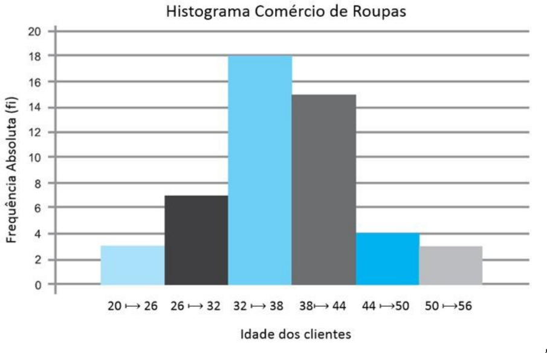

Probabilidade e Estatistica
Distribuição de frequência
Tipos de dados:
*Qualitativos:
- Nominal: sexo, cor dos olhos...
- Ordinal: Classe social, grau de instrução...
*Quantitativos:
- Contínua: peso, altura, salário...
- Discreta: Número de Filhos, Número de carros...
Frequências:
Frequências absoluta(Fi):
- Total de Ocorrências de Cada classe
Frequência Relativa(Fri):
- Fi da Classe em relação ao total de ocorrências
Frequência Percentual(Pi):
- Fri em porcentagem (Pi = Fri x 100)
Frequencia Acumulada:
- Vai somando os Fi das classes, pode ser FAC ou FAD
Histograma:
- Consiste em um gráfico de barras que demonstra a distribuição das frequências, onde a base de cada uma das barras representa uma classe e a altura a sua frequência.
Dados Brutos:
- São os Dados na sua "primeira forma", como foram obtidos inicialmente. A quantidade total é denotada por 'n'
Rol:
- Rol é a organização dos dados por ordem de valor, crescente ou decrescente.
| 2 | 2 | 2 | 3 | 3 | 3 | 3 | 3 | 6 | 6 | 6 | 6 | 6 | 8 | 8 | 8 | 8 | 8 | 10 |
Amplitute Total(A)
- É a diferença entre o maior e o menor valor do rol. Ex.: 10 - 2 = 8
Numero de Classes(k):
- A pessoa que Define, em geral não é menor que 4 e nem maior que 10.
Exemplo:
| Ano/Trimetre | 1 | 2 | 3 | 4 |
|---|---|---|---|---|
| 2015 | 3 | 3 | 2 | 9 |
| 2016 | 2 | 8 | 7 | 3 |
| 2017 | 7 | 8 | 6 | 3 |
| 2018 | 7 | 3 | 3 | 6 |
| Quantidade de Devoluções | Frequência Absoluta | Frequência Relativa | Frequência Percentual | Frequência Acumulada Crescente (FAC) |
|---|---|---|---|---|
| 2 | 2 | 2/16 | 12,5% | 2 |
| 3 | 6 | 6/16 | 37,5% | 8 |
| 6 | 2 | 2/16 | 12,5% | 10 |
| 7 | 3 | 3/16 | 18,75% | 13 |
| 8 | 2 | 2/16 | 12,5% | 15 |
| 9 | 1 | 1/16 | 6,25% | 16 |
n: 16
Rol: 2 2 3 3 3 3 3 3 6 6 7 7 7 8 8 9
Amplitute Total(A): 9 - 2 = 7
Número de Classes (K): 6
Distribuição De frequência com intervalo de Classes:
Amplitude de classe(h):
para descubrir tem a regra que diz que:
se n < 25 (h = A/5)
se n >= 25 (h = A/√n)
Numero de classes(k)
e de uma maneira geral temos que K = A/h
Ogiva de galton
...
Media:
tem que descobrir os pontos medio e multiplar pelos fi's e divitir pelos somatorio dos fi's
Moda:
Tem que descobrir qual o